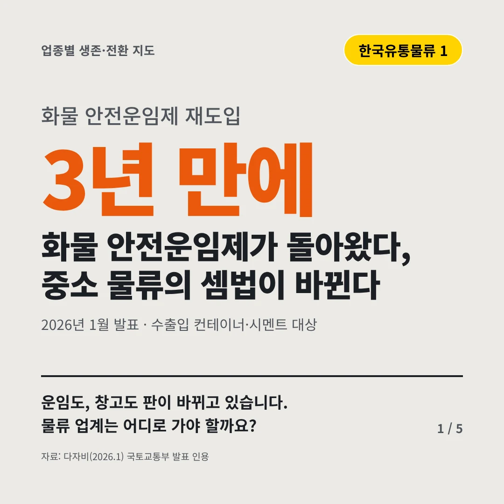
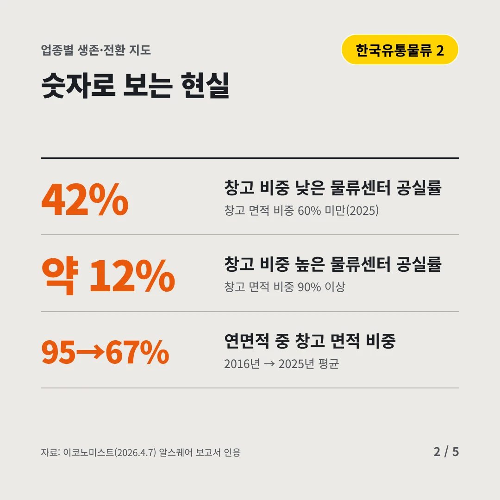
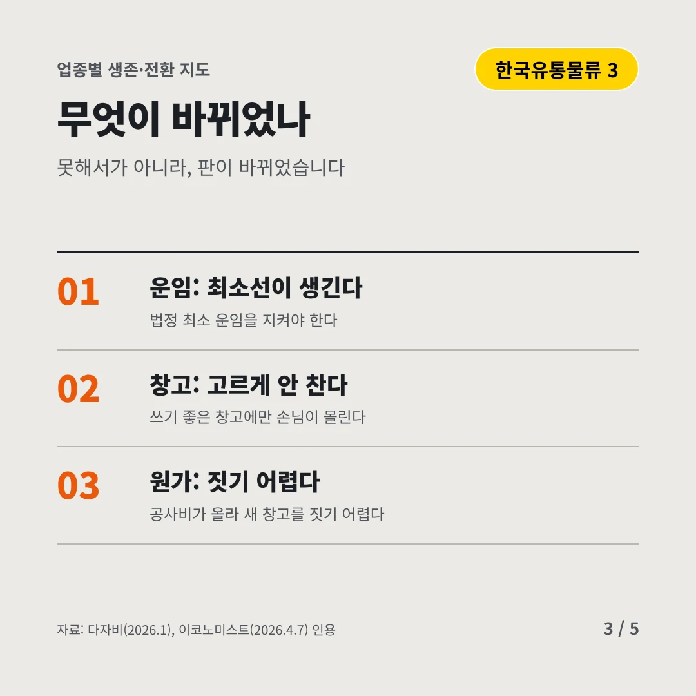
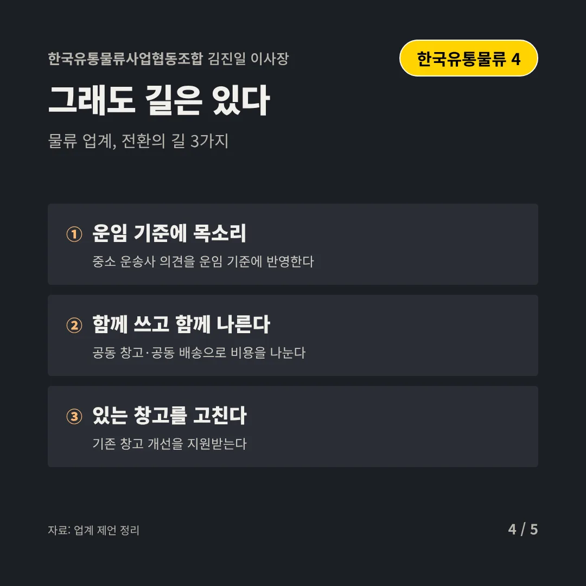
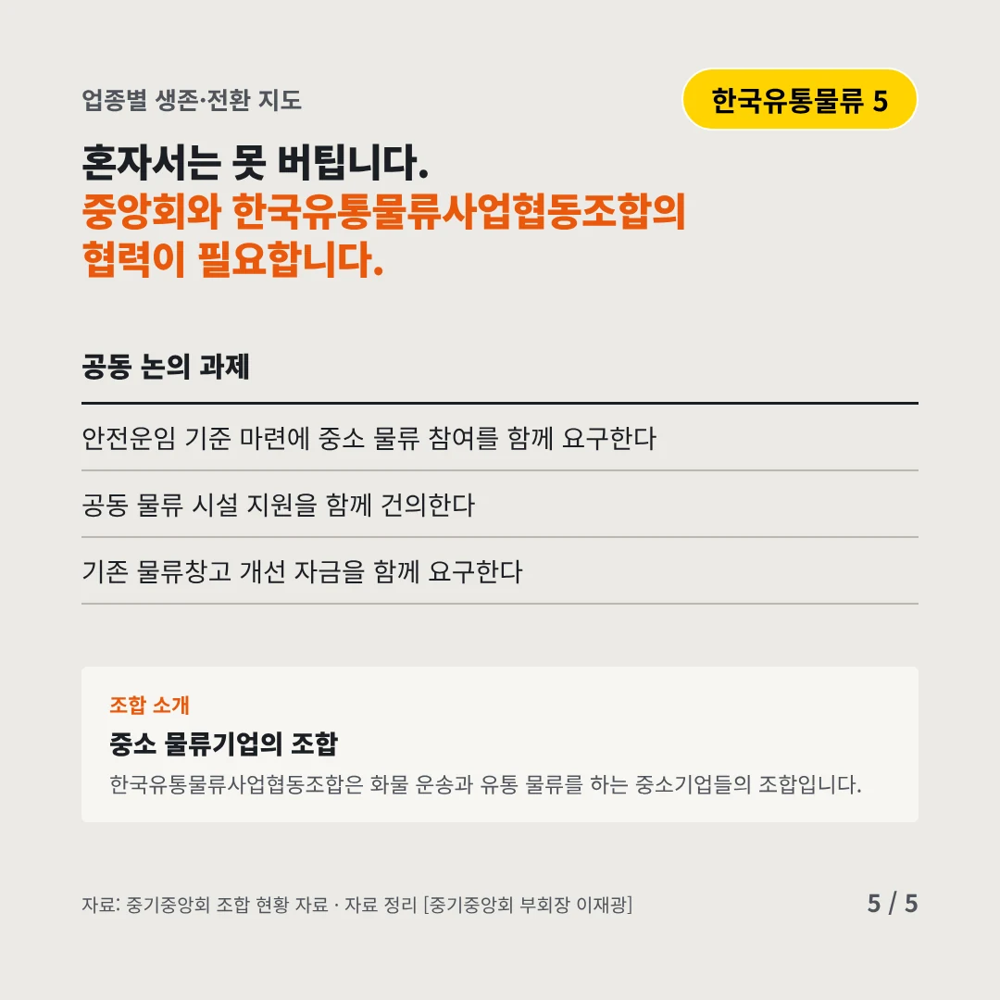
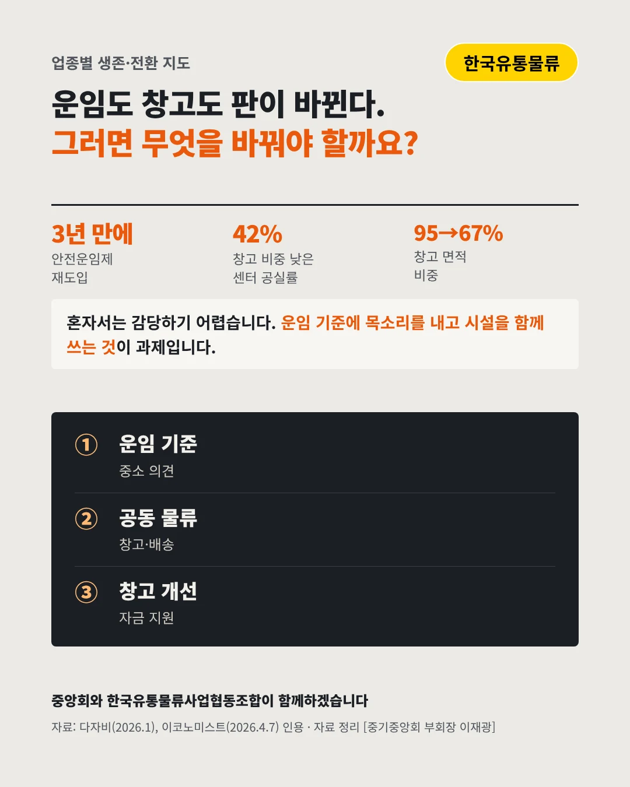

한국유통물류사업협동조합김진일 이사장
화물 안전운임제가 돌아왔다, 중소 물류의 셈법이 바뀐다
3년 만에 화물 안전운임제 재도입






운임도, 창고도 판이 바뀌고 있습니다. 물류 업계는 어디로 가야 할까요?
숫자로 보는 현실
- 42%창고 비중 낮은 물류센터 공실률창고 면적 비중 60% 미만(2025)
- 약 12%창고 비중 높은 물류센터 공실률창고 면적 비중 90% 이상
- 95→67%연면적 중 창고 면적 비중2016년 → 2025년 평균
무엇이 바뀌었나
- 운임: 최소선이 생긴다법정 최소 운임을 지켜야 한다
- 창고: 고르게 안 찬다쓰기 좋은 창고에만 손님이 몰린다
- 원가: 짓기 어렵다공사비가 올라 새 창고를 짓기 어렵다
그래도 길은 있다
- 운임 기준에 목소리중소 운송사 의견을 운임 기준에 반영한다
- 함께 쓰고 함께 나른다공동 창고·공동 배송으로 비용을 나눈다
- 있는 창고를 고친다기존 창고 개선을 지원받는다
한 장 요약

조합 소개
한국유통물류사업협동조합은 화물 운송과 유통 물류를 하는 중소기업들의 조합입니다.
자료: 다자비(2026.1), 이코노미스트(2026.4.7)